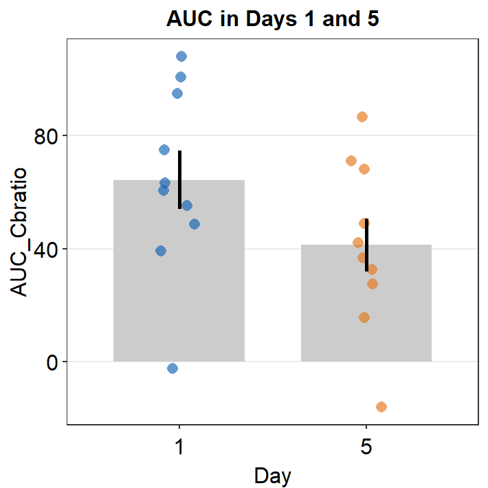

Chapter 11 Understanding the Contrast Sensitivity Function
In this section, the model that is used to fit the contrast sensitivity function (CSF) in sm_CSF() is discussed in detail. If readers decide to use smCSF, it is necessary to understand and report these details on their manuscripts.
11.1 Contrast Sensitivity Function Model
The model that is used to fit CSF in sm_CSF() employs this formula below. It also referred to as the truncated log-parabola model of the contrast sensitivity function (Kim et al., 2017)
\(S'(f) = log_{10}(\gamma_{max}) - \kappa\left(\frac{log_{10}(f) - log_{10}(f_{max})}{\beta'/2}\right)^{2}\), where \(\kappa = log_{10}(2)\) and \(\beta' = log_{10}(2\beta)\)
\(S(f) = log_{10}(\gamma_{max}) - \delta\), if \(f < f_{max}\) and \(S'(f) < log_{10}(\gamma_{max}) - \delta\)
\(S(f) = S'(f)\) when \(f > f_{max}\)
There are four parameters in the model. First, the peak gain \(\gamma_{max}\) denotes the peak sensitivity of the contrast sensitivity function. Second, the peak spatial frequency \(f > f_{max}\) essentially refers to the region of the x-axis of the CSF where the peak sensitivity \(\gamma_{max}\) is located. It can also be thought of as the center of the (log) contrast sensitivity function. Third, the bandwidth \(\beta\) describes the width of the contrast sensitivity function. This width is measured at the half of the maximum sensitivity \(\gamma_{max}\). Moreover, the truncation value \(\delta\) is a factor that makes sure that the contrast sensitivity function is asymmetric. This factor does not have a huge importance.
Finally, there is another parameter, known as the cutoff spatial frequency \(f_{c}\). It is the spatial frequency where the log-sensitivity is 0 (linear sensitivity = 1) Here is the equation to calculate \(f_{c}\):
\(f_{c} = f_{max}*10^{\frac{\beta'}{2}\sqrt\frac{log_{10}(\gamma_{max})}{\kappa}}\)
sm_params calculates all of these parameters automatically.
As I have already stated, if the reader decides to use smCSF, it is important to mention in their reports about the parameters and the equations, as well as to understand them.
11.2 Understanding sm_CSF()
If the user provides linear data of spatial frequency and contrast sensitivity, sm_CSF() can appear to magically plot the contrast sensitivity function with a very good fit as demonstrated below.
library(tidyverse)
library(smplot)
library(smCSF)
ACh <- read_csv('https://www.smin95.com/data_ACh.csv')ACh1 <- ACh %>%
group_by(SpatialFreq) %>%
summarise(avgSens = mean(Sensitivity),
stdErrSens = sm_stdErr(Sensitivity),
stdDevSens = sd(Sensitivity))
ACh1## # A tibble: 12 x 4
## SpatialFreq avgSens stdErrSens stdDevSens
## <dbl> <dbl> <dbl> <dbl>
## 1 0.25 13.2 0.536 5.41
## 2 0.35 15.2 0.568 5.74
## 3 0.49 19.1 0.698 7.05
## 4 0.68 24.3 0.836 8.44
## 5 0.94 29.4 0.938 9.48
## 6 1.31 33.0 0.977 9.87
## 7 1.83 33.6 0.996 10.1
## 8 2.54 30.8 0.970 9.80
## 9 3.54 25.4 0.856 8.64
## 10 4.93 18.9 0.681 6.88
## 11 6.87 12.7 0.513 5.19
## 12 9.57 7.81 0.381 3.85ACh1 %>% ggplot(aes(x = SpatialFreq, y = avgSens)) +
sm_CSF()Notice that ACh1 does not contain any predicted values from the truncated log-parabola model of the CSF. And yet, somehow, sm_CSF() manages to plot the predicted values from the model with the given data, rather than the points of the actual data themselves. Let’s walk through these steps to understand what is happening behind the scenes.
11.2.1 sm_params()
sm_params() returns the four main parameters of the model that result in the lowest difference (i.e., residual sum of squares = RSS) between the fitted values \(\hat{y_{i}}\) and the actual data (\(y_{i}\), linear data). The fitted values \(\hat{y_{i}}\) are the ones that result from plugging in four parameters into the formulas of the model, which is specified in sm_findQCSF() and described in the earlier section of the chapter. The RSS is computed as:
\(\sum_{i=1}^{n}(\hat{y_{i}} - y_{i})^{2}\)
In short, the smaller the RSS, the better the model is because it means that the model describes the actual data more faithfully.
sm_params() repeatedly plugs in different combinations and permutations of the four parameters. This process is repeated many times until the four parameters yield the smallest RSS. This process is known as optimization. During the first iteration of optimization, it uses initial guess parameters, which are provided by the argument param0, to calculate the RSS. Then, it tries another four parameters. The ranges of the parameters are limited, however. When the parameters of the CSF model are estimated, it is standard to set the upper and lower bound of the parameters. These are set by the arguments param_upLimit and param_lowLimit, respectively. sm_params() specifically uses the L-BFGS-B algorithm to perform the optimization so that upper and lower bounds can be set to estimate the parameters that yield the minimum RSS. smCSF provides default values for param0, param_upLimit and param_lowLimit (see the values below) so that the user does not have to be stressed about these initial parameters, and can easily visualize and analyze the contrast sensitivity function.
param0 = log10(c(100, 1, 2, 0.5))
param_upLimit = log10(c(2000, 20, 9, 2))
param_lowLimit= log10(c(2, 0.2, 1, 0.02)) params <- sm_params(ACh1$SpatialFreq, ACh1$avgSens, param0,
param_upLimit, param_lowLimit)
params## logGain logPeakSF logOctaveWidth logTrunc logCutOffSF
## 1.5114544 0.1450387 0.6006582 -0.3010300 1.4909611The first four parameters (logGain, logPeakSF, logOctaveWidth and logTrunc) yield the lowest RSS possible between the actual data and the fitted values.
11.2.2 sm_cutOff()
Using the first three parameters (logGain, logPeakSF and logOctaveWidth), sm_cutOff() computes the cutoff spatial frequency, which is also printed as the 5th parameter from sm_params(). In other words, sm_params() also runs the function sm_cutOff() to obtain the cutoff spatial frequency.
The a fourth argument of sm_cutOff() is sensCutOff. The default is set to 1. This refers to the sensitivity level that the user wishes to measure the cut-off spatial frequency. This means that the cut-off SF is measured when the linear sensitivity equals to 1 for the default,.
params[[5]]## [1] 1.490961sm_cutOff(params[[1]], params[[2]], params[[3]])## [1] 1.490961sm_cutOff() computes the cutoff spatial frequency and returns it in a log10 unit. In a linear spatial frequency, this can be about 30.97 c/deg.
# linear conversion of the log units
10^params## logGain logPeakSF logOctaveWidth logTrunc logCutOffSF
## 32.467917 1.396493 3.987110 0.500000 30.971422Let’s visually confirm whether the cut-off spatial frequency yields sensitivity that is equal to 0. First, we will need to create a sequence of x values (about 200) to plot a continuous function of the CSF model from the minimum tested SF (min(ACh1$SpatialFreq)) to 31 c/deg. This can be done using seq() function.
Then using the sequence of the x values, we plug them into the CSF formulas with the parameters that we have obtained using sm_params() to obtain the fitted values.
grid <- data.frame(x = seq(min(ACh1$SpatialFreq),31, length = 200))
grid$y <- 10^sm_findQCSF(log10(grid$x),
params[[1]], params[[2]],
params[[3]], params[[4]])
head(grid,10) # first 10 rows## x y
## 1 0.2500000 11.08954
## 2 0.4045226 18.59659
## 3 0.5590452 23.95092
## 4 0.7135678 27.56634
## 5 0.8680905 29.91028
## 6 1.0226131 31.34346
## 7 1.1771357 32.12558
## 8 1.3316583 32.44129
## 9 1.4861809 32.42228
## 10 1.6407035 32.16323grid variable contains all the fitted values as a function of the x values.
Now let’s plot the fitted values.
grid %>% ggplot(aes(x = x, y = y)) +
geom_point() +
scale_x_continuous(trans = 'log10') +
scale_y_continuous(trans = 'log10') +
sm_hgrid() +
geom_vline(xintercept = max(ACh1$SpatialFreq),
color = sm_color('red'), size = 1,
linetype = 'dashed') +
annotate('text', x = 3, y = 1.5,
label = 'maximum tested\nSF', color =
sm_color('red'))
If you use sm_CSF(), you will get the same plot, but this plot only has a x-range from the minimum and maximum values of the spatial frequency within the SpatialFreq column of ACh1. You might get some warning messages after the running the example code below but you can ignore them altogether.
ACh1 %>% ggplot(aes(x = SpatialFreq, y = avgSens)) +
sm_CSF() +
sm_hgrid() +
scale_x_log10(limits = c(min(grid$x),max(grid$x))) +
scale_y_log10(limits = c(min(grid$y), max(grid$y)), breaks = c(1,3,10,30)) 
From the first plot, it is visually clear that at about 31 c/deg, the linear sensitivity approaches 1 (i.e., log-sensitivity = 0). We can also directly see the fitted values in the grid data frame and confirm our qualitative observation.
tail(grid)## x y
## 195 30.22739 1.049434
## 196 30.38191 1.037546
## 197 30.53643 1.025833
## 198 30.69095 1.014292
## 199 30.84548 1.002919
## 200 31.00000 1.00000011.3 Understanding sm_ribbonCSF()
Another highlight of the smCSF package is the function sm_ribbonCSF(), which magically plots the ribbon shades around the fitted CSF from sm_CSF().
ACh1 %>% ggplot(aes(x = SpatialFreq, y = avgSens)) +
sm_ribbonCSF(aes(ymin = avgSens - stdDevSens,
ymax = avgSens + stdDevSens)) +
sm_CSF() +
sm_hgrid()
How is that the plot above shows the standard deviation across the sequence of x-values even if the contrast sensitivity has been tested at across only 12 unique spatial frequencies?
This is because the plot shown above shows 3 fits of the CSF rather than 1. The one that the reader can obviously recognize is the CSF fit using the raw data, shown as the black line. The other 2 fits are less apparent. These are basically the upper and lower bounds of the CSF ribbon.
The upper fit of the CSF is created using values from ymax = avgSens + stdDevSens. The lower fit of the CSF is done so using values from ymin = avgSens - stdDevSens. ymax and ymin values are used to estimate the 4 parameters of the CSF fit each. These are then used to fit the CSF curves.
Let’s recreate the plot above using only sm_CSF() and without sm_ribbonCSF(). To do so, we will need to create two more columns ymin and ymax.
ACh2 <- ACh1 %>% mutate(ymin = avgSens - stdDevSens,
ymax = avgSens + stdDevSens)
ACh2## # A tibble: 12 x 6
## SpatialFreq avgSens stdErrSens stdDevSens ymin ymax
## <dbl> <dbl> <dbl> <dbl> <dbl> <dbl>
## 1 0.25 13.2 0.536 5.41 7.78 18.6
## 2 0.35 15.2 0.568 5.74 9.50 21.0
## 3 0.49 19.1 0.698 7.05 12.1 26.2
## 4 0.68 24.3 0.836 8.44 15.9 32.8
## 5 0.94 29.4 0.938 9.48 20.0 38.9
## 6 1.31 33.0 0.977 9.87 23.1 42.9
## 7 1.83 33.6 0.996 10.1 23.5 43.6
## 8 2.54 30.8 0.970 9.80 21.0 40.6
## 9 3.54 25.4 0.856 8.64 16.8 34.1
## 10 4.93 18.9 0.681 6.88 12.0 25.8
## 11 6.87 12.7 0.513 5.19 7.51 17.9
## 12 9.57 7.81 0.381 3.85 3.96 11.7The code below will generate warning messages but these are trivial, so you can ignore them.
ACh2 %>% ggplot(aes(x = SpatialFreq, y = avgSens)) +
sm_CSF() +
sm_CSF(aes(x = SpatialFreq, y = ymin), linetype = 'dashed') +
sm_CSF(aes(x = SpatialFreq, y = ymax), linetype = 'dashed') +
sm_hgrid() We now have recreated the same plot without using sm_ribbonCSF().
11.4 Calculating the five parameters of all subjects, groups and conditions
So far, we have discussed in detail what the parameters mean and how sm_CSF() and sm_ribbonCSF() plot the CSF curves. We have also discussed how to use sm_params() with the given data. Now, lets use sm_params_list() to compute the five parameters of all subjects across groups and conditions. To do so, we will need a data frame that contains the data of each observer that has been assigned to a group and condition. ACh1 is an example of such a data frame.
ACh## # A tibble: 1,224 x 4
## Subject Repetition SpatialFreq Sensitivity
## <chr> <dbl> <dbl> <dbl>
## 1 S1 1 0.25 23.8
## 2 S2 1 0.25 18.0
## 3 S3 1 0.25 14.2
## 4 S4 1 0.25 5.14
## 5 S5 1 0.25 16.0
## 6 S6 1 0.25 10.9
## 7 S7 1 0.25 8.41
## 8 S8 1 0.25 10.5
## 9 S9 1 0.25 9.06
## 10 S10 1 0.25 3.57
## # ... with 1,214 more rowssm_params_list() work very similarly to sm_trapz_list(), sm_AULCSF_list() and sm_r2_list(). Here are the arguments:
data= this argument requires the variable that stores the data frame. In our case, it isACh. Data should be in linear units.subjects= this argument requires the name of the column of the data frame that contains subjects. It must strings, ex.'Subject', notSubject.groups= this argument requires the name of the column of the data frame that contains each group. In this example, there is no group. An example would beGroupcolumn that contains two groups:NormalandAmblyopia.conditions= this argument requires name of the column of the data frame that contains each condition. In our example, the two conditions are1and2from theRepetitioncolumn.x= this argument requires the name of the column of the data frame that contains the x-axis points from which the AUC can be calculated. In our case, these are values from theSpatialFreqcolumn ofACh. It must be strings, ex.'SpatialFreq', notSpatialFreq. Also, it must be numeric/double, NOT factor. Make sure you check that the column is numeric. If its not, convert the column of the dataframe into double beforehand. ex.df$SpatialFreq <- as.numeric(df$SpatialFreq)values= this argument requires the name of the column of the data frame that contains the actual data, which are the y-axis points from which the AUC can be calculated. In our case, it is the change in contrast balance ratio. It must strings, ex.'Sensitivity', notSensitivity.param0= This argument should a vector that contains the initial guess values for the four parameters (peak gain, peak spatial frequency, bandwidth and truncation value) of the log-truncated CSF model. This argument is not required because the default has been set tolog10(c(100, 1, 2, 0.5)).param_upLimit= This argument should be a vector that contains the upper bounds of the four parameters (peak gain, peak spatial frequency, bandwidth and truncation value) of the log-truncated CSF model. This argument is not required because the default has been set tolog10(c(2000, 20, 9, 2)).param_lowLimit= This argument should be a vector that contains the lower bounds of the four parameters (peak gain, peak spatial frequency, bandwidth and truncation value) of the log-truncated CSF model. This argument is not required because the default has been set tolog10(c(2, 0.2, 1, 0.02)).
params_df <- sm_params_list(subjects = 'Subject',
conditions = 'Repetition',
x = 'SpatialFreq',
values = 'Sensitivity',
data = ACh)## [1] "CSF parameters = Sensitivity ~ SpatialFreq"head(params_df[[1]])## Subject Repetition logGain logPeakSF logOctaveWidth logTrunc logCutOffSF
## 1 S1 1 1.629834 0.09807101 0.6119619 -0.30103 1.522009
## 2 S1 2 1.569498 0.01320197 0.5270044 -0.30103 1.216546
## 3 S2 1 1.562791 0.18084246 0.6510530 -0.30103 1.664255
## 4 S2 2 1.521231 0.22933453 0.6888543 -0.30103 1.777866
## 5 S3 1 1.394250 0.14405204 0.6446500 -0.30103 1.531413
## 6 S3 2 1.668939 0.17290997 0.5060525 -0.30103 1.364456params_df[[2]]## [1] 0.25 0.35 0.49 0.68 0.94 1.31 1.83 2.54 3.54 4.93 6.87 9.57sm_params_list() returns a list, which as two elements. The first element has a data frame of all the parameters as well as the identifiers for conditions and subjects. The second element contains a vector that has x, which in this case is the linear units of spatial frequency.
11.5 Visualization of the parameters
Here is a visual representation of the parameters. The contrast sensitivity function has been drawn with the four parameters that have been obtained from the ACh data set. The four parameters have been used to draw the contrast sensitivity function all the way to 30 c/deg. As an exercise, the reader can produce the example below. This plot has been entirely drawn with R, including the arrow and text annotations.
11.6 Case Study
In the previous chapter, I foreshadow that there is a parameter that can inform us about whether the high-spatial frequency range has improved or not. There are two parameters: 1) bandwidth, and 2) cut-off spatial frequency. Kim et al does not use the bandwidth to analyze their results because the authors believe that analyzing both bandwidth and cut-off spatial frequency is redundant. Likewise, this case study only shows the analysis of cut-off spatial frequency but this can be applied to all other parameters as well.
As in the previous chapter, let’s make some fake data with ACh. This new data frame is stored in the variable named ACh3. We assume that the 51 subjects are visually impaired patients who received clinical treatment for visual improvement.
ACh$Repetition <- factor(ACh$Repetition)
ACh3 <- ACh %>% mutate(BeforeAfter = fct_recode(Repetition,
'Before' = '1',
'After' = '2')) %>%
select(-Repetition)
set.seed(33)
ind <- which(ACh3$BeforeAfter == 'After')
ACh3[ind,]$Sensitivity <- ACh3[ind,]$Sensitivity + abs(rnorm(length(ind), 31, 35))Now let’s calculate five parameters using sm_params_list().
params_df <- sm_params_list(subjects = 'Subject',
conditions = 'BeforeAfter',
x = 'SpatialFreq',
values = 'Sensitivity',
data = ACh3)## [1] "CSF parameters = Sensitivity ~ SpatialFreq"head(params_df[[1]])## Subject BeforeAfter logGain logPeakSF logOctaveWidth logTrunc logCutOffSF
## 1 S1 Before 1.629834 0.09807101 0.6119619 -0.30103 1.522009
## 2 S1 After 1.902661 0.48036071 0.8259008 -0.30103 2.556726
## 3 S2 Before 1.562791 0.18084246 0.6510530 -0.30103 1.664255
## 4 S2 After 1.892264 0.20854797 0.7047611 -0.30103 1.975513
## 5 S3 Before 1.394250 0.14405204 0.6446500 -0.30103 1.531413
## 6 S3 After 2.005334 -0.02095422 0.6068997 -0.30103 1.545456Let’s store the results of cut-off spatial frequency in a new variable cut_sf along with Subject and BeforeAfter columns.
cut_sf <- params_df[[1]][c(1,2,7)]
head(cut_sf)## Subject BeforeAfter logCutOffSF
## 1 S1 Before 1.522009
## 2 S1 After 2.556726
## 3 S2 Before 1.664255
## 4 S2 After 1.975513
## 5 S3 Before 1.531413
## 6 S3 After 1.545456After we convert the cut-off SF into linear units, let’s plot a bar graph to show the results and see whether cut-off SF has increased. If it increases, it shows that the high spatial frequncy range’s overall sensitivity has improved. This also applies to the bandwidth.
cut_sf$linCutOff <- 10^cut_sf$logCutOffSF
head(cut_sf)## Subject BeforeAfter logCutOffSF linCutOff
## 1 S1 Before 1.522009 33.26667
## 2 S1 After 2.556726 360.35096
## 3 S2 Before 1.664255 46.15881
## 4 S2 After 1.975513 94.51766
## 5 S3 Before 1.531413 33.99482
## 6 S3 After 1.545456 35.11200Notice that we have created a new column entitled linCutOff. We will now plot the values from the column, as shown below.
cut_sf %>% ggplot(aes(x = BeforeAfter, y = linCutOff,
fill = BeforeAfter)) +
sm_bar(shape = 21, color = 'white', bar_fill_color = 'gray80',
point_alpha = .3, bar_width = 0.5) +
scale_fill_manual(values = sm_palette(2)) +
scale_y_continuous(trans = 'log10') +
ggtitle('Cut-off spatial frequency') +
ylab('Cut-off SF (c/deg)') +
xlab('Before/after treatment')